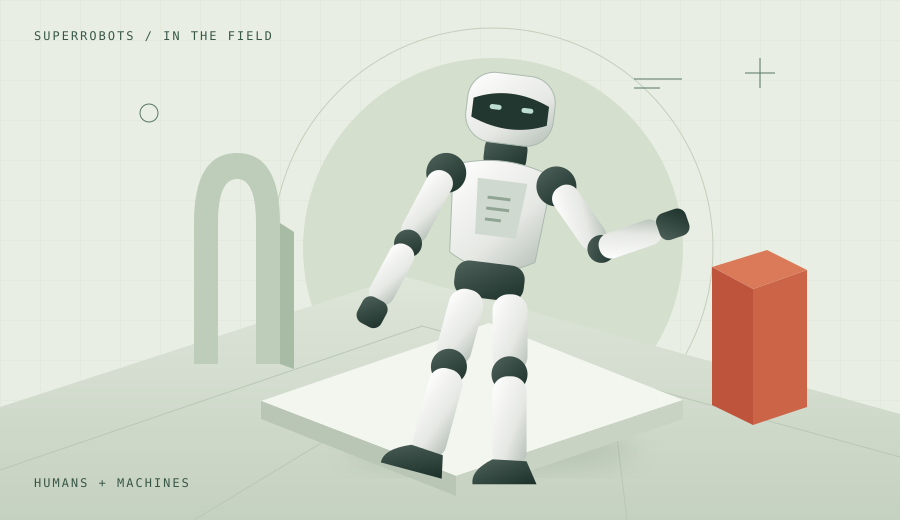

Editorial illustrationReal-world robots/ Hengqin
More than 300 robots join the everyday life of a theme park
AgiBot and Chimelong put robots to work across performances, visitor guidance, education, retail, and hospitality in Hengqin.
The machines. The makers. The breakthroughs.
Discover the stories shaping robotics, selected from Chinese sources and brought to you in English.

Editorial illustrationAgiBot and Chimelong put robots to work across performances, visitor guidance, education, retail, and hospitality in Hengqin.
Recent releases, research, and real-world deployments.
A National Day show puts coordinated humanoid performances and public interaction in the spotlight at the Guangdong Science Center.
Read English briefVoice-controlled music is scheduled to reach the full-size humanoid on October 15. Music-generated movement remains a development goal.
Read English briefAgiBot and Chimelong put robots to work across performances, visitor guidance, education, retail, and hospitality in Hengqin.
Read English briefThe Chinese project README records a September 28 release of UnifoLM-WLA-1.0-Base and tools for adapting the model.
Read English briefLimX Dynamics and Enhance pair a TRON 2 mobile platform with a tennis-training system at the Billie Jean King Cup finals.
Read English briefThe upgraded humanoid brings a two-axis neck, stereo and wide-angle vision, touch sensing, and external power support.
Read English briefThe Series C round backs Sunrise chips and a software platform spanning data collection, training, simulation, and deployment.
Read English briefNo stories match your search. Try another topic or keyword.
7 stories · Newest first
SuperRobots selects robotics stories from Chinese reporting, company announcements, and technical publications. We translate and summarize the key points in English, with dates and direct links so you can follow the story back to its source.
Company-reported capabilities are attributed to their makers. These are concise editorial briefs, not full article translations. This is a curated edition, last reviewed on .
Go from reading the news to building your own coding skills.